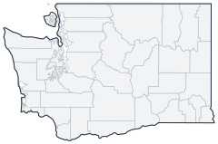

Historical county changes, 1790–1990 › Washington

| Name↕ | Unit↕ | Existed↕ | FIPS↕ |
|---|---|---|---|
| Adams County | county | 1890–1990 | 53001 |
| Asotin County | county | 1890–1990 | 53003 |
| Benton County | county | 1910–1990 | 53005 |
| Chelan County | county | 1900–1990 | 53007 |
| Clallam County | county | 1860–1990 | 53009 |
| Clark County | county | 1850–1990 | 53011 |
| Columbia County | county | 1880–1990 | 53013 |
| Cowlitz County | county | 1860–1990 | 53015 |
| Douglas County | county | 1890–1990 | 53017 |
| Ferry County | county | 1900–1990 | 53019 |
| Franklin County | county | 1890–1990 | 53021 |
| Garfield County | county | 1890–1990 | 53023 |
| Grant County | county | 1910–1990 | 53025 |
| Grays Harbor County | county | 1860–1990 | 53027 |
| Island County | county | 1860–1990 | 53029 |
| Jefferson County | county | 1860–1990 | 53031 |
| King County | county | 1860–1990 | 53033 |
| Kitsap County | county | 1860–1990 | 53035 |
| Kittitas County | county | 1890–1990 | 53037 |
| Klickitat County | county | 1860–1990 | 53039 |
| Lewis County | county | 1850–1990 | 53041 |
| Lincoln County | county | 1890–1990 | 53043 |
| Mason County | county | 1860–1990 | 53045 |
| Okanogan County | county | 1890–1990 | 53047 |
| Pacific County | county | 1860–1990 | 53049 |
| Pend Oreille County | county | 1920–1990 | 53051 |
| Pierce County | county | 1860–1990 | 53053 |
| San Juan County | county | 1870–1990 | 53055 |
| Skagit County | county | 1890–1990 | 53057 |
| Skamania County | county | 1860–1990 | 53059 |
| Snohomish County | county | 1870–1990 | 53061 |
| Spokane County | county | 1880–1990 | 53063 |
| Stevens County | county | 1860–1990 | 53065 |
| Thurston County | county | 1860–1990 | 53067 |
| Wahkiakum County | county | 1860–1990 | 53069 |
| Walla Walla County | county | 1860–1990 | 53071 |
| Whatcom County | county | 1860–1990 | 53073 |
| Whitman County | county | 1880–1990 | 53075 |
| Yakima County | county | 1870–1990 | 53077 |
The first Spokane County was renamed Stevens in 1864.(p. 176, Note 3).
Note: Decimals in FIPS codes come from Forstall, who gives every county a code, including counties that no longer exist. A county abolished between 1930 and 1990 keeps the code it had. However, a county which was abolished prior to 1930 never received a code. Such a county is given the code of the county which precedes it alphabetically plus a decimal to hold its place in the list.
Source: Richard L. Forstall (1996), Population of States and Counties of the United States: 1790 to 1990, U.S. Bureau of the Census (public domain). Always check a row against the scan it links to.